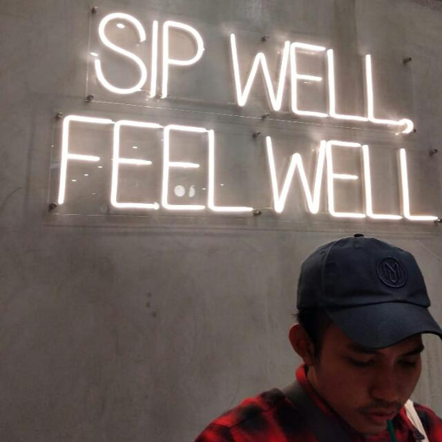

Hello!
I am a final year college student interested in the field of web application creation and development. Currently, I am developing a personal portfolio website using Bootstrap. I am also an alumnus of the 2021 BANGKIT program in
Machine Learning Path. I am a person who wants to learn new things. I am good at time management and planning and currently, looking for an internship to earn my bachelor's degree and also earn more experience in this field